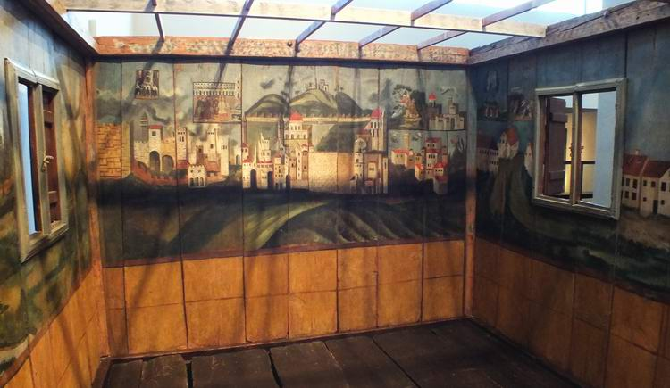
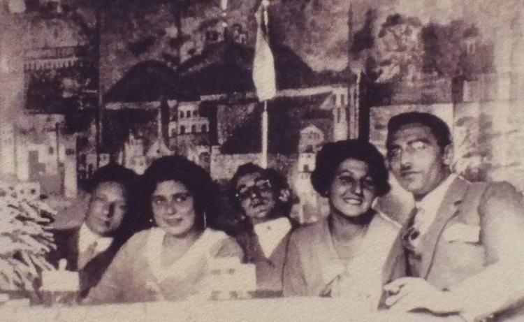
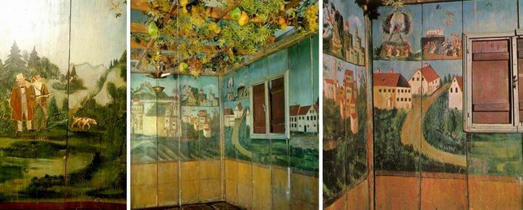
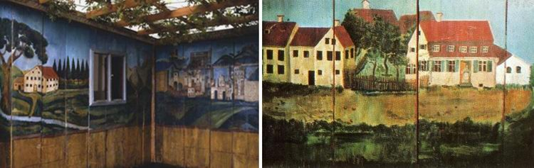
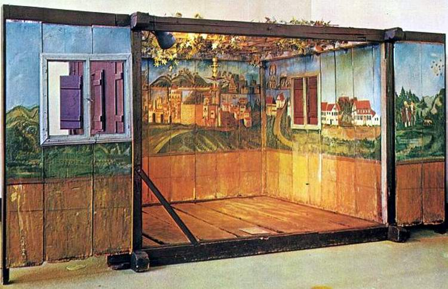

The Feast of Sukkot. The Deller Family's Dream
As late as the 1930s, before the Nazis came to power in Germany, the family of the German Jews Abraham and Sophie Deller built a sukkah, a wooden booth, in their courtyard. It was a special sukkah, handed down in the Deller family from generation to generation. And every year after Yom Kippur the family set about putting it up, according to tradition and the commandments of the Torah.

When the Nazis came to power in Germany, putting up this sukkah became more and more dangerous…
***

The Feast of Sukkot. The Deller family's dream
The first owners of this relic, who had it made, were Naftali and Zila Deller, German Jews who lived in Germany in the 19th century. They commissioned Joseph Schwarz, a local artist and scholar, to paint the inside of their festive sukkah. So from outside it looked no different from any other sukkah put up for the feast as commanded. But inside… It was a work of art and a real treasure.
What was inside gave those sitting in it during the seven days of the feast the impression of a double reality. Or more precisely, the joining of reality and dream.
While three walls of the sukkah bore panoramas of the places where the Deller family lived, with scenes of German life of the time, the fourth wall showed another reality. Facing east, it was painted with views of Jerusalem.

This wall could be seen only on entering the sukkah. And the sukkah served as a kind of time machine, an instrument for turning an unattainable dream into reality: "Ba-shana ha-ba'a bi-Yerushalayim" (Next year in Jerusalem). This is how the Jews of the 19th century drew nearer to their impossible dream. All the other walls had window or door openings. Only the wall facing east was blind to what was happening outside and open to everyone inside the sukkah, fulfilling the commandment of the Torah. While they could freely look into that near reality through the door and windows (from inside out or the other way round), Jerusalem could be reached only by faith and by fulfilling the commandment of Sukkot.
The artist Joseph Schwarz worked on commission from the Deller family and according to their instructions. The paintings covering all the walls of the sukkah show scenes taken from various sources.
Bright, detailed panoramas of Jerusalem and the Western Wall make up the central wall of the sukkah. The subject of the painting was copied from a 19th-century lithograph made in Eretz Israel. Above it are five vignettes, modelled on the illustrations of a festival prayer book (Machzor) printed in Sulzbach in 1826: scenes connected with the main Jewish feasts: 1. the sacrifice of the lamb at Passover; 2. the giving of the Torah at Shavuot; 3. the Akedah, the binding of Isaac, the Torah portion read at Rosh ha-Shana; 4. the high priest's sacrifice on Yom Kippur; and 5. the hakafot (הַקָּפוֹת, the custom of dancing with the Torah scroll at Simchat Torah) at Sukkot.

On the other walls are scenes showing German villages and landscapes, and real inhabitants of the village of the time. On the right is a picture of the mistress herself, Zila Deller, the owner of the sukkah, waiting at the door of her house. The back wall shows the local baron setting off to hunt, the protector of the village's Jews.

The painted wooden boards of the sukkah were counted and numbered so that they could easily be put together the next year. And every year, now the son of Naftali and Zila Deller, Abraham, with his wife Sophie, put up the family sukkah (I would say, the family dream: "next year in Jerusalem"), assembling the numbered painted boards into a simple booth in the courtyard of his house, until the Nazis came to power in Germany.
And so in 1935 this sukkah was smuggled out of the village of Fischach near Augsburg and, through the good offices of Dr Heinrich Feuchtwanger, given by the Deller family to the museum of the Bezalel School in Jerusalem.

In 2010 the treasured Deller sukkah was again put on display in the Israel Museum after restoration by the Atelier laboratories of the regional conservation department in Brittany, France, funded by Alberto Deller, grandson of the original owners, and his wife Frida Klein-Deller (Quito, Ecuador), in memory of their son Pierre Philippe and in honour of his children, Aaron and Natalie Deller.
The article uses material from 1, 2, 3, 4.
Photos of our sukkah and how we built it can be seen here.
Author: Ephraim Kalish
 The Sukkah and the Wild Olive. Building a Sukkah as Written
The Sukkah and the Wild Olive. Building a Sukkah as Written Sounds of the Shofar. Awe and Prophecy
Sounds of the Shofar. Awe and Prophecy The Jewish Attitude to the Feasts of the LORD
The Jewish Attitude to the Feasts of the LORD